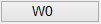
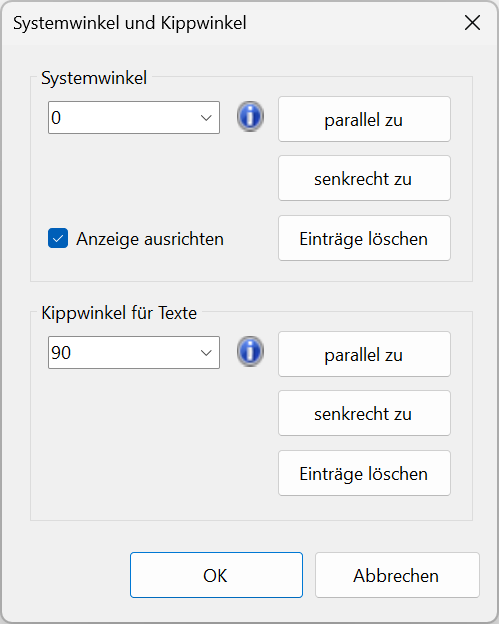
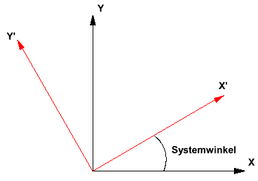
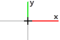
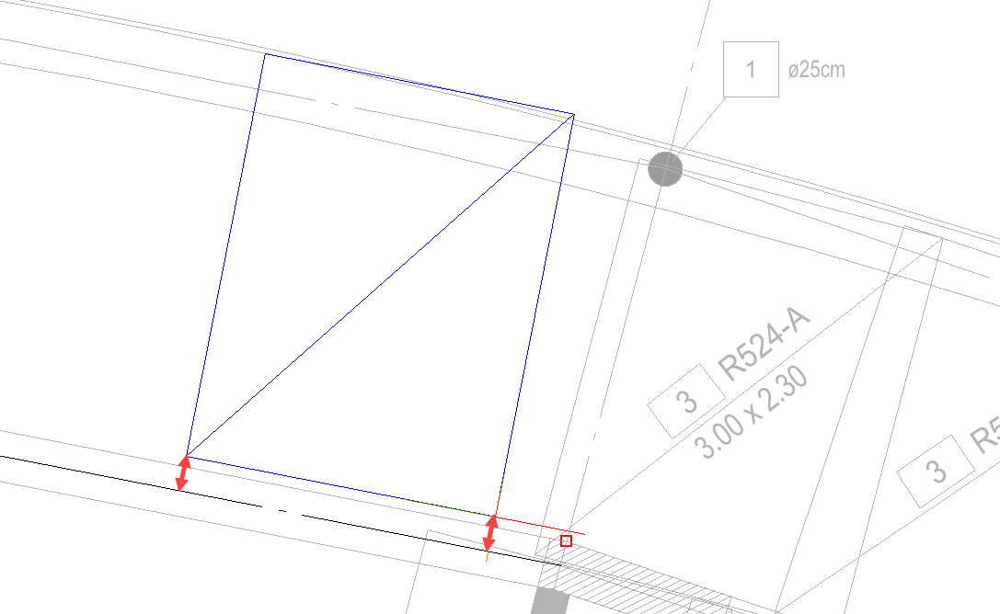
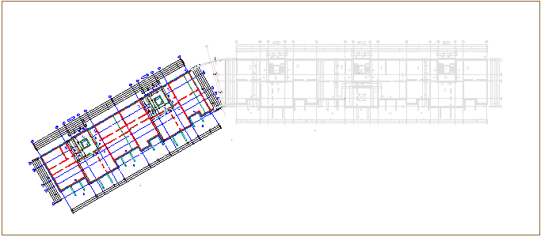
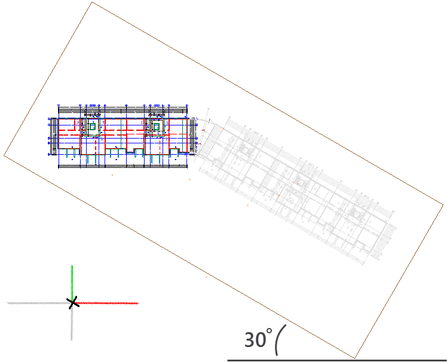
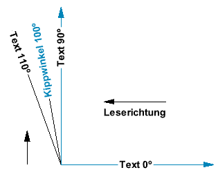

Der aktuell gültige Systemwinkel wird in der unteren Menüleiste auf der Schaltfläche angezeigt, z. B.: [W0] = 0º oder [W45] = 45º.
Optionen im Dialog "Systemwinkel und Kippwinkel"
 |
Systemwinkel
Der Systemwinkel gibt die Achsausrichtung des X- und Y-Koordinatensystems an, wobei der Koordinatenursprungspunkt (0, 0) beibehalten wird. Sie können den Systemwinkel drehen und orthogonal zur Achsausrichtung Elemente konstruieren, bearbeiten, selektieren sowie Konstruktionshilfen nutzen. Einzufügende Elemente wie Blattrahmen, Dokumente oder Grafiken werden ebenfalls im eingestellten Systemwinkel platziert. Sie können den Systemwinkel während der Planbearbeitung jederzeit verändern und ihn bei Bedarf zu einer beliebigen Linie parallel oder senkrecht ausrichten.
Mit der Option Anzeige ausrichten (s. weiter unten) kann die Zeichenfläche mit allen enthaltenen Elementen um den Systemwinkel gedreht werden. (Siehe Anzeige ausrichten weiter unten).
 |
Darstellung des Systemwinkels am Cursors
Wenn Sie den großen Cursor nutzen, können Sie den gedrehten Systemwinkel anhand der X- und Y-Achse des Cursors erkennen.
 |
|
Systemwinkel = 0º |
Systemwinkel = 45º |

Eingabe
Geben Sie den Systemwinkel ein oder klappen Sie mit einem Linksklick die Dropdown-Liste  auf und wählen Sie einen der zuletzt verwendeten Werte aus.
auf und wählen Sie einen der zuletzt verwendeten Werte aus.
parallel zu
Klicken Sie eine Linie in der Zeichnung an, um den Drehwinkel der Linie als Systemwinkel zu übernehmen. Der Winkel wird eingestellt. Ist die Option Anzeige ausrichten bei einem Systemwinkel ≠ 0º aktiviert, wird die Zeichenfläche um diesen gedreht. (Siehe: Anzeige ausrichten weiter unten).
Beispiel:  |
Um die Verlegung einer Flächenmatte zu erleichtern, wurde der Systemwinkel vorübergehend aus einer Linie übernommen, zu der die Matte parallel verlegt werden soll. |
senkrecht zu
Klicken Sie eine Linie in der Zeichnung an, um den Drehwinkel der Linie + 90º als Systemwinkel zu übernehmen. Der Winkel wird eingestellt. Ist die Option Anzeige ausrichten aktiviert, wird die Zeichenfläche um diesen Winkel gedreht. (Siehe: Anzeige ausrichten weiter unten).
Liste mit Einträgen
Listet die zehn zuletzt eingegebenen Systemwinkel auf. Klicken Sie einen Eintrag an, um diesen zu übernehmen.
Einträge löschen
Löscht alle Einträge in der Liste, bis auf den zuletzt eingestellten Winkel.
Aktivieren Sie diese Option, um die gesamte Zeichenfläche im Systemwinkel eines abgewinkelten Elements zu drehen. Tragen Sie hierzu den Drehwinkel des Elements unter Systemwinkel ein. Anschließend können Sie wie in der Normalansicht (Systemwinkel = 0º) arbeiten, wobei sich alle Winkeleingaben auf diese Ansicht beziehen. Die X- und Y-Achse des großen Cursors werden parallel zur Normalansicht ausgerichtet. Der Cursor selbst wird um den Systemwinkel gedreht.
 |
 |
Normalansicht: Systemwinkel = 0º |
Gedrehte Ansicht: Systemwinkel = 30º |
Kippwinkel für Texte
Beim parallelen oder orthogonalen Ausrichten eines Textes zu einem Bezugselement entspricht der Kippwinkel einem Grenzwert, ab dem ein Text überkippt wird und sich die Leserichtung ändert. Die Winkelangabe bezieht sich auch auf Texte, die neu generiert werden.
Bei schräg eingefügten Blattrahmen ergibt sich die Überkippung aus dem Drehwinkel des Blattrahmens plus dem eingegebenen Kippwinkel. Wird z. B. ein Blattrahmen mit einem Drehwinkel von 30º bei einem Kippwinkel von 100º eingefügt, findet eine Überkippung der Texte ab einem Winkel >130º statt.
Ein geänderter Systemwinkel hat keine Auswirkung auf den Kippwinkel. Der Kippwinkel bezieht sich immer auf einen Systemwinkel von 0º.
Beispiel: Kippwinkel = 100º  |
Im Bild findet eine Überkippung bzw. eine Änderung der Leserichtung ab einem Kippwinkel >100º statt. Bis zu einem Winkel von 100º bleibt der Text im Beispiel von rechts lesbar. |
Eingabe
Geben Sie einen Kippwinkel zwischen 0º und <180º ein oder klappen Sie mit einem Linksklick die Dropdown-Liste  auf und wählen Sie einen der zuletzt verwendeten Werte aus.
auf und wählen Sie einen der zuletzt verwendeten Werte aus.
parallel zu
Klicken Sie eine Linie in der Zeichnung an, um den Winkel der Linie als Kippwinkel zu übernehmen.
senkrecht zu
Klicken Sie eine Linie in der Zeichnung an, um den Drehwinkel der Linie + 90º als Kippwinkel zu übernehmen.
Liste mit Einträgen
Listet die zehn zuletzt eingegebenen Kippwinkel auf. Klicken Sie einen Eintrag an, um diesen zu übernehmen.
Einträge löschen
Löscht alle Einträge in der Liste, bis auf den zuletzt eingestellten Winkel.
Siehe auch: